설계 → 확인 → 구현 → 검증 → 갱신
단계별 설계도 · 체크리스트
갱신 2026-10-07. 원문 기록: md/roadmap.md · 요구사항 game-plan.md · 구현 현황 implementation-status.md
작업 방식
S0~S3은 이 방식이 정해지기 전에 만들어져, 사후 확인을 받습니다.
전체 단계
| 단계 | 내용 | 상태 |
|---|---|---|
| S0 | 기반: 프로젝트·씬·이동·카메라·락온·입구 | 구현 · Play 확인 대기 |
| S1 | 스탯 5종 규칙 계층 | 규칙 검사 통과 · Play 대기 |
| S2 | 전투 선택: 3m 진입·포커스·8방향 예약·판정·임시 연출·HUD | 규칙 검사 통과 · Play 대기 |
| S3 | Shift 대쉬·체력 3 패링·특수기 2 지나가며 베기 | 구현 · Play 확인 대기 |
| S4 | 적 AI: FSM·5개 공격 패턴·예고 | 구현 · Play 확인 대기 |
| S5 | 교환 연출: 성공/실패 각 5변형·치명타 모션 3개 | 구현 · Play 확인 대기 |
| S6 | 점프·맵 파괴 | 구현 · Play 확인 대기 |
| S7 | 타이틀·스탯 배분 화면·승패·재시작 | 구현 · Play 확인 대기 |
| S8 | 아트·한글 글꼴·사운드·템포 | S8-1~4 구현 · Play 확인 대기 |
S0 기반 · S1 스탯 · S2 전투 선택
S0
- 컴파일·씬 생성
- Play: WASD 이동, 마우스 시점, 휠 락온
- Play: 입구 진입 표시, 중앙까지 약 5초 보행
S1
- 스탯 0~3, 10포인트 초과 거부, 미소진 허용
- 5종 효과 계산, 같은 방향 3번째 규칙·색, 좌우 막힘, 비도, 패링 환급
- Play: 스탯 조합별 체감 → 수치 조정
S2
- 3m 진입·속도별 타수와 시간·시간 초과 분기
- 비도 원(예약 전에만, 던지면 종료), HUD와 판정 같은 계산
- Play: 마우스 감도·8방향 선택감
- Play: 한글·화살표 표시
- Play: 포커스 카메라·슬로모션 배율
S3 이동 기술 구현 · Play 확인 대기
| 기능 | 입력 | 동작 | 시험값 |
|---|---|---|---|
| 대쉬 | Shift · 실시간 | 이동 방향(없으면 정면)으로 돌진 | 4m/0.18초 · 충전 2.5/1.8/1.2/0.6초 · 무적 특수기 1+ 0.3초 |
| 가드 패링 | 우클릭 · 실시간 · 체력 3 | 0.3초 동안 들어오는 피해 패링 | 쿨 8초 · 성공 시 50% 환급 |
| 지나가며 베기 | 선택 중 우클릭 · 특수기 2+ | 예약 타격 먼저 → 적 관통 2.5m 뒤로 베기 | ×2.5 · 쿨 10초×기력 배율 |
| 테스트 공격 | T · 디버그 | 0.6초 예고 후 4m 안 10 피해 | S4에서 제거 |
사후 확인 답변 (9차)
- 대쉬 4m · 0.18초 적당
- 지나가며 베기: 예약 없이 바로 베기, 무조건 성공
- 특수기 3 마무리도 무조건 성공
- 베기 후 적 뒤에 서서 바로 공격
- 패링 성공 → 적 무방비(기지개) → 좌클릭 공격 1회
수정 설계 확인 · 구현 · 규칙 검사 통과
| 항목 | 제안 |
|---|---|
| 베기 사용 시점 | 아직 아무것도 예약하지 않았을 때만 우클릭(비도와 같은 규칙) |
| 베기 피해 | ×2.5 → ×4.5 (힘 2 기준 45, 일반 3타 최대 합 33보다 강함) |
| 마무리 표시 | 3번째 칸 "마무리 100%" |
| 무방비 시간 | 1.5초(실제 시간), 선택 화면 동안 정지 |
| 무방비 연출 | 양팔·검을 위로 젖히며 뒤로 휘청(임시) |
| 반격 진입 거리 | 무방비 중 4m 안 |
| 반격 방식 | 선택 화면, 속도와 상관없이 1타만 · 비도·베기 불가 |
| 반격 성공률 | 무조건 성공, 일반 1타 피해(힘 3 치명타 가능) |
| 미사용 시 | 1.5초 지나면 해제 |
구현 체크
- 규칙 검사: 베기 조건·쿨타임, 패링 구간 피해 무효, 선택 무적, 시간 초과 예외
- Play: 대쉬 무적 중 T 공격 회피 / 특수기 0은 피격
- Play: 가드 중 T 공격 패링
- Play: 선택 중 우클릭 관통 베기(예약 전에만, 확정)
- 규칙 검사: 마무리·베기·반격 무조건 성공, 베기 ×4.5 > 3타 합, 반격 1타
- Play: T 공격 가드 → 무방비 1.5초(기지개) → 4m 안 좌클릭 반격 1회
S4 적 AI · 설계 1.0 확인 · 구현 · Play 확인 대기
근거: R06 광역 중심·확률 방어 · R11 빠른 추적·3거리 패턴 · R16 가벼운 템포 · R20 돌진 + 후퇴 사격. 맵 파괴는 S6.
1. 상태 흐름
2. 거리별 패턴
| 패턴 | 예고 | 후딜 | 피해 | 범위 |
|---|---|---|---|---|
| 큰 검 휘두르기 | 0.5초 | 0.6초 | 15 | 부채꼴 3.5m · 140° |
| 돌진 베기 | 0.6초 | 0.8초 | 18 | 폭 1.5m · 길이 8m |
| 투척 | 0.5초 | 0.5초 | 8 | 투사체 18m/s · 반경 0.4m · 유도 없음 |
| 도약 내려찍기 | 0.9초(체공) | 1.0초 | 25 | 착지 원형 4m |
| 후퇴 사격 | 0.4초 | 0.4초 | 8 | 뒤로 4m 도약 + 투사체 1발 |
3. 플레이어 시스템과 연결
| 상황 | 적 동작 |
|---|---|
| 선택 화면·교환 연출 중 | 정지(예고도 멈춤) · 선택 중 피격 없음 유지 |
| 플레이어 타격 하나라도 성공 | 진행 중 예고·공격 취소 → 경직 0.4초 |
| 모두 막힘 | 예고 이어서 진행, 남은 예고 최소 0.3초 보장 |
| 패링 성공 | 공격 취소 + 무방비 1.5초 → 후딜 0.3초 |
| 투사체 | 패링 가능 · 대쉬 무적이면 통과 |
| T 테스트 공격 | 이 단계에서 제거 |
4. 수치 · 5. 모듈
적 체력 100 → 220 · 이동 6m/s · 회전 360°/초 · 전투장 반경 24m 안
EnemyBrain(상태·선택) · EnemyMoveset(패턴 데이터) · AttackShape(표시=판정 같은 데이터) · TelegraphView(바닥 표시) · EnemyMotor(이동) · EnemyProjectile · EnemyPose(자세 추가)
6. 확인 체크리스트
- 상태 흐름 · 예고 마지막 0.2초 고정
- 패턴 5종 거리·예고·후딜·피해·범위
- 선택 규칙: 무작위 없음 · 후퇴 사격 조건 · 3연속 금지 (규칙 검사)
- 선택·교환 중 정지 / 성공 시 취소 / 전부 막히면 이어서 (구현 · Play 확인)
- 패링 시 공격 취소 + 무방비 후 0.3초 후딜 (구현 · Play 확인)
- 투사체 패링 가능 (구현 · Play 확인)
- 적 체력 220 · 이동 6m/s
- T 테스트 공격 제거
- 범위 판정 규칙 검사
- Play: 첫 공격 도약 · 패턴별 회피/패링 · 후딜 후면 공격 · 승패
S5 교환 연출 · 설계 1.0 확인 · 구현 · Play 확인 대기
근거: R05 결과만 애니메이션으로 · R15 성공 시 멀어짐 / 실패 시 충돌·힘겨루기, 각 약 5종 · R16 짧은 템포 · R18 같은 방향 몸 회전 · 1차 답변 검 궤적 예시 · 힘 3 치명타 모션 약 3개. 판정은 교환 전에 끝나 있고 연출은 결과만 보여줍니다.
1. 타격 1회 시간표
2. 검 끝자세와 궤적
3. 성공 반응 5종 · 적이 멀어짐
| ID | 반응 | 언제 | 끝 거리 |
|---|---|---|---|
| 성1 | 뒤로 밀려나며 미끄러짐 | 기본 | 3.5m |
| 성2 | 비틀거리며 옆으로 돌아감 | ← → 수평 | 3.5m |
| 성3 | 무릎이 꺾였다 일어남 | ↓ ↙ ↘ 내려 베기 | 3m |
| 성4 | 크게 튕겨 뒤로 구름 | 치명타 · 마무리 · 지나가며 베기 · 반격 | 4.5m |
| 성5 | 상체를 젖히며 뒷걸음 | ↑ ↗ ↖ 올려 베기 | 3.5m |
중간 타는 짧은 반응(0.15초, 0.5m) 후 다음 타로 이어집니다.
4. 실패 반응 5종 · 충돌·힘겨루기 후 분리 (위에서부터 우선)
| ID | 반응 | 언제 |
|---|---|---|
| 실3 | 적이 검을 흘려냄 → 플레이어 옆으로 비틀 | 같은 방향 둘째 타 실패 |
| 실5 | 적이 한 발 비켜 피함 | 좌우 막힘 누적 쪽으로 실패 |
| 실4 | 적이 돌아서며 몸으로 막음 | 후면 공격 실패 |
| 실2 | 칼날 맞대고 힘겨루기 0.4초 → 밀려남 | 체력 0~1 (반동 피해) |
| 실1 | 검이 맞부딪혀 둘 다 튕김 | 그 외 (체력 2~3) |
5. 힘 3 치명타 모션 3종 · 6. 타격감
| ID | 모션 | 언제 |
|---|---|---|
| 치1 | 같은 궤적 한 번 더(잔상) | ← → |
| 치2 | 검을 돌려 찌르기 | ↑ ↗ ↖ |
| 치3 | 어깨로 밀친 뒤 내려 베기 | ↓ ↙ ↘ |
히트스톱 0.06초(성공) · 0.1초(치명타·마무리) · 0.05초(충돌) · 카메라 흔들림 · 검 잔상 · 충돌 불꽃 · 소리는 S8
7. 모듈
ExchangeDirector(시간표·반응 선택·접촉 시 피해) · FighterRig(로우폴리 자세 출력, 나중에 Animator로 교체) · SwordStance(끝자세 이월) · ReactionLibrary(동작 데이터) · HitFeedback(히트스톱·흔들림·잔상·불꽃). 판정 코드는 바꾸지 않고 결과에 반응 선택용 기록만 추가.
8. 확인 체크리스트
- 타격 시간표 · 접촉 순간 피해 1회
- 궤적 = 현재 끝자세 → 선택 방향, 같으면 회전 베기
- 끝자세 이월 · 실시간 2초 후 기본 자세 ↘
- 선택 화면 끝자세 표시 (구현 · Play 확인)
- 검 자세 → 성공률 영향은 이번 단계 제외
- 성공 반응 5종 · 선택 규칙
- 실패 반응 5종 · 우선순위
- 치명타 모션 3종
- 히트스톱·흔들림·잔상·불꽃 (구현 · Play 확인)
- 끝 거리 성공 3~4.5m · 실패 3m (구현 · Play 확인)
S5 수정안 · 성공 반응을 반격·회피로 구현 · Play 확인 대기
사용자 의견: 맞는 모션은 별로 → 반격하거나 피하는 모션. 판정·피해는 그대로, 적의 보이는 동작만 바꾸고 맞은 표시는 파편·히트스톱·체력바로 전달.
| ID | 기존(피격) | 수정(반격·회피) | 언제 |
|---|---|---|---|
| 성1 | 뒤로 밀려남 | 백스텝 회피 · 다시 겨눔 | 기본·비도 |
| 성2 | 옆으로 비틀 | 옆 구르기로 빠져나감 | ← → |
| 성3 | 무릎 꺾임 | 낮게 숙여 뒤로 미끄러짐 | ↓ ↙ ↘ |
| 성4 | 크게 튕겨 구름 | 맞받아치다 크게 밀려남 | 치명타·마무리·베기·반격 |
| 성5 | 상체 젖힘 | 젖혀 피하며 반격 헛베기(피해 없음) | ↑ ↗ ↖ |
- 성공 반응 5종 교체 (구현 · Play 확인)
- 반격 헛베기는 연출만(피해 없음)
- 실패 반응 5종 유지
S6 점프 · 맵 파괴 · 설계 1.0 구현 · Play 확인 대기
근거: R10 점프를 선택에 활용 · R06 맵 파괴·광역 중심 · 파괴 범위·엄폐·복구 미정 항목. Space 키는 비도가 클릭으로 바뀌어 비어 있음.
1. 점프
| 항목 | 제안 |
|---|---|
| 키 · 상태 | Space · 실시간만 · 2단 점프·공중 대쉬 없음 · 쿨타임 없음 |
| 공중 조작 | 방향 유지, 지상의 40% |
| 공중 베기 | 선택 화면 동안 공중 정지, 교환 후 착지 |
| 스탯 영향 | 없음 |
2. 맵 파괴 · 소품 배치
3. 모듈
PlayerJump(점프·착지·공중 여부) · DestructibleProp(소품·조각) · PropBreaker(적 공격 범위·몸통과 겹친 소품 파괴) · GroundScar(착지 자국) · PrototypeBuilder 소품 배치. EnemyBrain에 "착지 상태에만 맞음" 조건, 투사체 소품 차단, 판정에 공중 베기 보정 추가.
4. 확인 체크리스트
- 점프 Space · 1.2m · 0.55초 · 실시간만 · 2단/공중 대쉬 없음
- 점프로 도약 충격파·휘두르기 회피 / 돌진·투사체는 못 피함
- 공중 베기 ↓↙↘ +10% (공중 정지는 Play 확인)
- 파괴는 소품만 · 기둥 8 + 바위 6
- 소품이 투사체를 막는 엄폐
- 적 공격·몸통에 닿으면 파괴, 플레이어 공격은 파괴 안 함
- 조각 3초 소멸·충돌 없음 · 착지 자국 30초 (Play 확인)
- 재시작 시에만 복구
S7 게임 흐름 · 설계 1.0 구현 · Play 확인 대기
근거: 원본 흐름 Title → Stage → Battle → Victory/Defeat → Title · R08 5스탯 0~3 총 10 · 7차 답변 미소진 허용·0포인트 하드코어 · 미정이던 스탯 화면 위치·승패·재시작·저장·이탈. 화면은 S8 전까지 임시 IMGUI.
1. 전체 흐름
장면: Title(새로 · 타이틀 + 스탯 배분) · Foundation(기존 전투장 · 결과·일시정지). 스탯은 RunSetup으로 전달, Foundation 단독 실행은 Inspector 값 사용.
2. 스탯 배분 화면 (시안 · 수치는 실제 StatTuning에서 자동 생성)
| 체력 | ●●○ | [-] [+] | HP 100 · 실패 시 적 2 피해 · 정면 +5% |
| 기력 | ●●● | [-] [+] | 스킬 쿨 ×0.5 · 비도 |
| 속도 | ●○○ | [-] [+] | 이동 4.5 · 1타 1.3초 · 대쉬 1.8초 |
| 힘 | ●●○ | [-] [+] | 피해 ×1.0 |
| 특수기 | ○○○ | [-] [+] | 대쉬 무적 없음 |
프리셋: [균형 2·2·2·2·2] [공격형 1·2·2·3·2] [회피형 2·2·3·1·2] [초기화] · 마우스를 올리면 다음 레벨 변화 표시
- 합계 10 초과 불가 · 남은 포인트가 있으면 출발 시 한 번 확인 · 0포인트는 "하드코어" 표시
- 마지막으로 고른 스탯을 이 기기에 기억
3. 전투장 · 결과 · 일시정지
| 항목 | 제안 |
|---|---|
| 입구 | 진입하면 닫힘(투명 벽 + 붉은 표시) · 전투 중 이탈 불가 |
| 승패 | 적 체력 0 = 승리 · 플레이어 체력 0 = 패배 |
| 끝 연출 | 마지막 타격 0.5초 슬로모션 → 결과 화면 |
| 결과 내용 | 시간 · 남은 체력 · 받은 피해 · 공격 성공률 · 최대 연속 성공 · 패링 횟수 · 사용 스탯 |
| 버튼 | 다시 하기(같은 스탯) · 스탯 다시 배분 · 타이틀로 · R 단축키 유지 |
| 일시정지 | Esc: 계속 · 다시 시작 · 타이틀로 · 종료 · 설정 (선택 화면 중에는 무시) |
| 설정 | 카메라 감도 · 선택 커서 감도 · 전체화면 (기기에 저장) |
| 저장 | 진행 저장 없음 · 마지막 스탯·설정만 |
4. 모듈
RunSetup · TitleMenu / StatAllocationView · StatDescriber(설명 자동 생성) · ArenaGate · RunRecord(전투 기록) · ResultScreen · PauseMenu / GameSettings. 승패 판정은 BattleFlow 그대로.
5. 확인 체크리스트
- 장면 2개 + RunSetup (흐름은 Play 확인)
- 게임 가제 "검협전"
- 배분 규칙 · 설명 자동 생성 · 프리셋 3종 (화면은 Play 확인)
- 마지막 스탯 기억 (확인 창·하드코어 표시는 Play 확인)
- 입구 닫힘 (구현 · Play 확인)
- 결과 기록 계산 (화면·버튼은 Play 확인)
- Esc 일시정지(선택·교환 중 무시) · 설정 3종 (구현 · Play 확인)
- 진행 저장 없음
S8 아트 · 사운드 · UI · 템포 · 설계 1.0 확인 · 하위 단계별 진행
근거: R17 직접 제작 후 교체 · 사용자 의견("에셋이 없어 구려 보인다", "맞는 모션은 별로") · 1920×1080 · 한글 표시 미확인. 게임 규칙·판정 코드는 바꾸지 않고 표현 계층만 교체합니다. 이번엔 방향·순서를 확인받고, 하위 단계마다 세부 체크리스트를 다시 올립니다.
1. 하위 단계와 순서
2. 아트 방향 · 분위기
| 선택지 | 내용 | 비고 |
|---|---|---|
| A | Mixamo 캐릭터·애니메이션(사용자가 Adobe 계정으로 직접 다운로드) | 동작 품질 최고 |
| B | CC0 로우폴리 팩(Kenney·Quaternius 등) | 환경 분위기 통일 |
| C | 블록 모델 개선 | 한계 큼 |
| 추천 A + B | 캐릭터·애니메이션 A, 환경 B | 각 강점만 |
한지·먹색, 붉은 포인트, 붓 터치 UI
밝은 색, 단순 도형
질감 중심, 에셋 부담 큼
3. 8방향 검 궤적 유지 방식
4. 각 하위 단계 요약
| 단계 | 제안 |
|---|---|
| S8-1 렌더·환경 | URP 전환(후처리 블룸·색보정) · 해 질 녘 조명·안개 · 돌판 바닥·돌담·목조 문 · 기둥·바위 모델(충돌체 크기 유지) |
| S8-2 캐릭터 | 플레이어 장검 인간형 · 적 큰 체구 대검 · 이동·회피·반격 동작 · AnimatorRig로 교체 |
| S8-3 UI | uGUI + TextMeshPro · Noto Sans KR(OFL) + 제목 붓글씨체 · 원형 선택 휠·HUD·메뉴 재디자인 · 1920×1080 기준 |
| S8-4 사운드 | 베기·타격·충돌·패링·치명타 · 발소리·대쉬·점프 · 적 패턴별 예고음 5종 · 소품 파괴 · UI · 배경음 2곡 · 믹서와 음량 설정 |
| S8-5 템포 | F1 디버그 표시 + 플레이 의견 → 수치 조정 → 튜닝 기록 |
5. 외부 자원과 승인
- 패키지 설치(URP, Animation Rigging)는 설치 전 확인
- Mixamo는 사용자가 로그인해 직접 다운로드 → 지정 폴더에 넣기
- CC0 팩·글꼴·효과음은 파일마다 이름·출처·크기를 알리고 승인 후 다운로드
- 출처·라이선스는 Assets/Game/Art/LICENSES.md에 기록
6. 확인 체크리스트
- 하위 단계 5개와 순서
- 아트 방향 A + B 혼합
- 분위기 ① 수묵 무협
- 검 팔만 궤적 IK, 몸은 애니메이션
- URP 전환
- uGUI + TextMeshPro · Noto Sans KR + 붓글씨 제목체
- 사운드 목록 · 출처 방식
- 템포 조정은 마지막
- 패키지·다운로드 항목마다 사전 승인
S8-1 렌더·환경 · 세부 설계 구현 완료 · Play 확인 대기
실제 렌더 미리보기 (Unity URP)
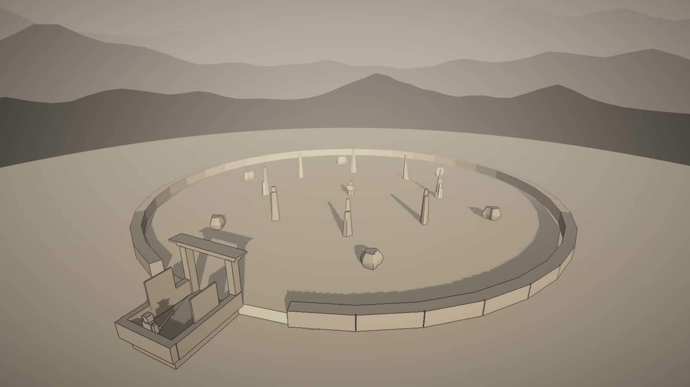
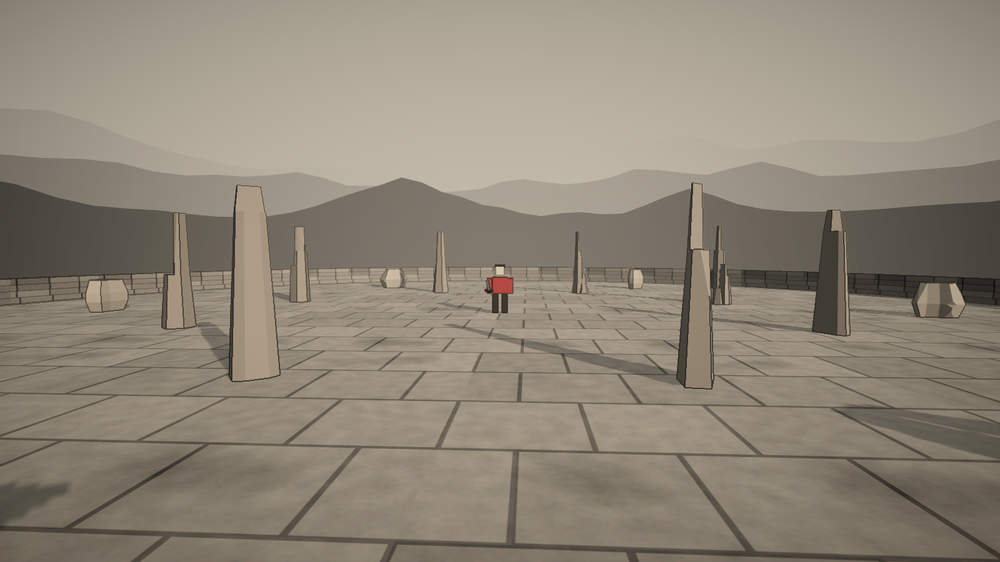
목표: 캐릭터는 아직 블록이지만 전투장 전체를 "안개 낀 수묵 무협"으로. 충돌체·판정 크기는 그대로, 보이는 것만 교체.
| 항목 | 제안 |
|---|---|
| URP 설치 | Package Manager로 설치(버전 자동, 인터넷 필요) · 설치 전 승인 |
| 재질 | 장면 생성 코드 재질 → URP Lit · 예고·잔상·파편·자국 → URP Unlit/Particles(분홍 깨짐 방지) |
| 시간대·조명 | 안개 낀 흐린 저녁 · 낮은 따뜻한 방향광 · 부드러운 그림자 · 3색 주변광 |
| 안개·하늘·원경 | 한지색 안개 · 회청→한지색 하늘 · 먼 산 실루엣 3겹(코드로 생성, 에셋 불필요) |
| 후처리 | 색보정(채도↓·따뜻한 색조) · 약한 블룸 · 비네트 |
| 먹선 | 화면 전체 외곽선(깊이·법선 기반, 직접 작성) · 포함 여부 결정 |
| 바닥·벽·문 | 석판 질감(CC0) + 먹 얼룩 · 낮은 돌담 · 목조 문(입구 닫힘 연동) |
| 기둥·바위 | CC0 로우폴리 모델(충돌체 유지) · 같은 재질 조각 |
외부 자원 후보: Kenney 또는 Quaternius(CC0) 바위·돌담·목조 팩 1~2개, ambientCG 또는 Poly Haven(CC0) 석판 질감 1종 — 내용·크기 확인 후 파일별 승인.
검증: URP 에셋 지정 · 모든 렌더러 URP 호환(분홍 없음) · 충돌체 크기 불변 · 진입 경로 · 전투장 미리보기 이미지 html/s8-1-preview.png · Play로 분위기·예고 가독성·프레임 확인.
- URP 17.3.0 설치
- 안개 낀 흐린 저녁 · 한지색 안개 · 먼 산 3겹
- 후처리(색보정·약한 블룸·비네트)
- 먹선 포함(직접 작성 셰이더)
- 석판·돌담·나무 질감 코드 생성 · 목조 문(닫힘은 Play 확인)
- 기둥·바위 Kenney Nature Kit(CC0 확인 · 출처 표기 의무 없음) · 판정 상자에 맞춤
- 후보 확인 · 석판 질감은 직접 생성으로 대체
S8-2 캐릭터·애니메이션 · 세부 설계 구현 · Play 확인 대기
실제 렌더 미리보기 (편집 모드 · IK는 플레이 중에만 반영)
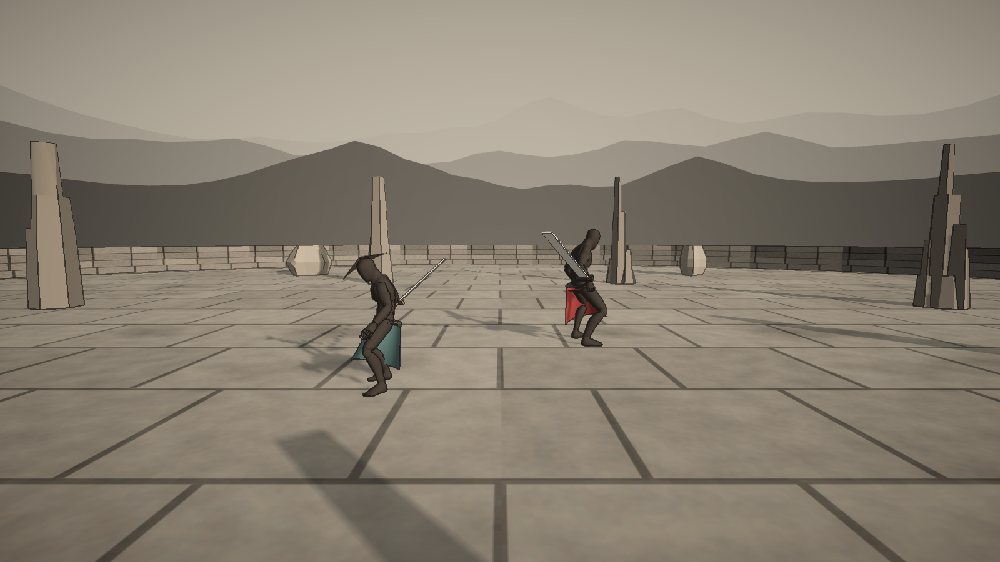
목표: 블록 인형 → 사람 모양 캐릭터 + 실제 애니메이션. 8방향 검 궤적·판정·연출 규칙은 그대로, 보이는 몸만 교체.
1. 출처 비교 (공식 페이지 확인 2026-10-08)
| 후보 | 라이선스 | 받는 방법 | 비고 |
|---|---|---|---|
| Mixamo | 무료 · 상업 로열티 없음 · 게임 명시 | Adobe 로그인, 사용자가 직접 | 출처 표기 언급 없음 |
| Quaternius Animation Library (추천) | CC0 · 출처 표기 불필요 | itch.io 0원 선택, 승인 후 다운로드 | 무료판 15MB · 120+ 동작 · 검 휘두르기 · Mixamo 뼈대 호환 |
| Quaternius Base Characters | CC0 · 출처 표기 불필요 | 위와 같음 | 무료판 122MB · 사람 6종 |
2. 외형 시안
| 안 | 내용 | 용량 |
|---|---|---|
| ① 마네킹 + 수묵 의상 (추천) | 애니메이션 팩의 인간형 마네킹(포함 여부 다운로드 후 확인) + 먹빛 재질 + 코드로 만든 삿갓·도포 자락·허리띠 | 15MB |
| ② 기본 캐릭터 | Base Characters 사람 모델 + 수묵 재질 (①이 안 되면 다시 확인) | +122MB |
3. 애니메이션 · 기술 방식
루트 모션 끔(이동은 지금처럼 코드) · 충돌체·판정·속도 변경 없음 · 무기는 코드로 생성(직검·대도) · 팩에 없는 동작은 가까운 동작 + 코드 보정으로 대신하고 목록에 표시.
4. 다운로드 (승인 필요)
| 파일 | 출처 | 크기 | 라이선스 |
|---|---|---|---|
| Universal Animation Library[Standard].zip | quaternius.itch.io (0원 선택) | 15MB | CC0 |
| (②일 때만) Universal Base Characters[Standard].zip | quaternius.itch.io | 122MB | CC0 |
받은 뒤 압축 안 라이선스 파일로 CC0 재확인 → 필요한 파일만 프로젝트에 → Art/LICENSES.md 기록.
5. 확인 체크리스트
- 출처 Quaternius(CC0, 압축 안 License.txt 재확인)
- 마네킹 포함 확인 · 먹빛 몸 + 도포·허리띠·삿갓
- 직검·대도 코드 생성
- 검 팔 Humanoid IK (Play 확인)
- 동작 신호(FighterCue) 정리 · 블록 인형 자동 대체
- Animation Library 15.2MB 받음 · Unity용 FBX만 사용
S8-3 UI 교체 · 세부 설계 구현 · Play 확인 대기
실제 렌더 미리보기 (Unity · 편집 모드라 캐릭터는 T자세)
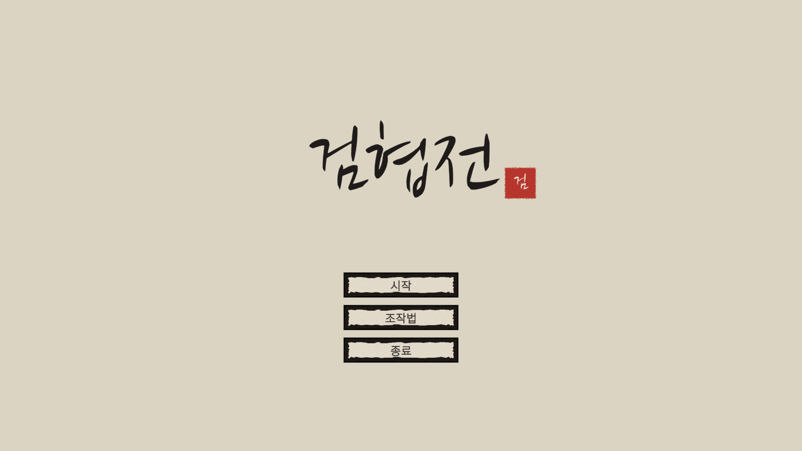
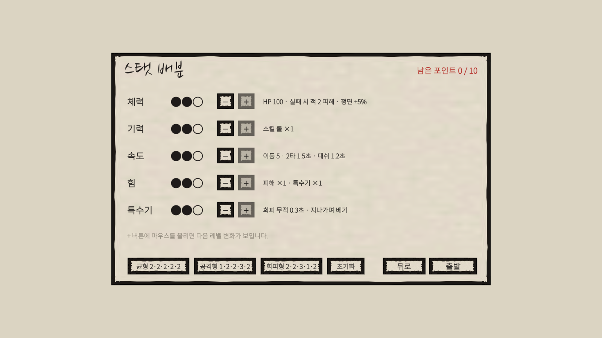
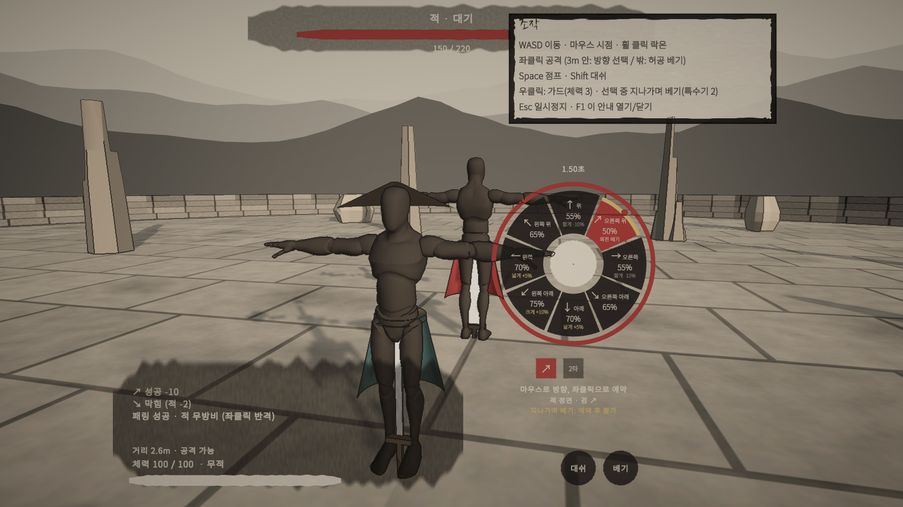
목표: 임시 IMGUI → 수묵 분위기 정식 UI, 한글·화살표 깨짐 해결. 보여주는 값과 버튼 동작은 지금과 같음.
1. 글꼴 라이선스 (공식 Google Fonts 저장소 확인)
| 글꼴 | 용도 | 라이선스 | 크기 |
|---|---|---|---|
| Noto Sans KR | 본문·숫자·버튼 | OFL 1.1 | 9.9MB |
| 나눔손글씨 붓 (추천) | 제목·승리/패배 | OFL 1.1 | 3.4MB |
| 동해 독도 | 제목 후보 2 | OFL 1.1 | 3.0MB |
| 송명 | 제목 후보 3 | OFL 1.1 | 1.9MB |
OFL 1.1: 무료 · 상업 게임 배포 가능 · 화면 크레딧 의무 없음. 단 CC0과 달리, 게임에 글꼴을 넣어 배포할 때 저작권 표시 + 라이선스 문서를 함께 넣어야 함 → 빌드에 Licenses/OFL.txt 자동 포함으로 처리(화면 표기 없음).
2. 선택 휠 시안
3. 전투 HUD · 다른 화면
| 화면 | 내용 (값·동작 동일) |
|---|---|
| 타이틀 | 붓글씨 "검협전" + 낙관 · 시작·조작법·종료 |
| 스탯 배분 | 먹점 ●○ · −/+ · 설명 · 다음 레벨 · 프리셋 · 하드코어 · 확인 창 |
| 결과 | 두루마리 판넬 · 붓글씨 승리/패배 · 기록 7항목 · 버튼 3개 |
| 일시정지·설정 | 한지 판넬 · 버튼 5개 · 감도 2 · 전체화면 |
| 조작 안내 | 첫 진입 시만, F1로 다시 |
기술: uGUI + TextMeshPro(Unity 내장) · 동적 한글 글꼴 · 화면을 에디터 코드로 생성 · 1920×1080 기준 · IMGUI 스크립트는 교체 후 삭제.
4. 다운로드 (승인 필요)
| 파일 | 출처 | 크기 |
|---|---|---|
| NotoSansKR[wght].ttf + OFL.txt | github.com/google/fonts (ofl/notosanskr) | 9.9MB |
| NanumBrushScript-Regular.ttf + OFL.txt (제목 선택에 따라) | github.com/google/fonts (ofl/nanumbrushscript) | 3.4MB |
5. 확인 체크리스트
- OFL — 화면 크레딧 없음, 빌드에 OFL.txt 자동 포함
- 제목 글꼴: 나눔손글씨 붓
- uGUI + TextMeshPro · 동적 한글 · 코드로 화면 생성
- 수묵 UI 스타일
- 선택 휠 설계(원형 8칸 · 바깥 고리 타이머 · 낙관 슬롯)
- 조작 안내 첫 진입 + F1 (Play 확인)
- 글꼴 2개 다운로드 승인
S8-4 사운드 · 세부 설계 구현 · Play 확인 대기
들어 보기 (합성한 실제 소리)
| 소리 | 재생 |
|---|---|
| 예고 · 휘두르기 (금속 긁힘) | |
| 예고 · 돌진 베기 (북 3연타) | |
| 예고 · 투척 (높은 딱 2회) | |
| 예고 · 도약 내려찍기 (징) | |
| 예고 · 후퇴 사격 (딱딱이) | |
| 베기 바람 · 회전 베기 · 큰 북 | |
| 승리 · 패배 가락 | |
| 배경음 · 타이틀 / 전투 |
목표: 전투가 소리로도 읽히게, 특히 적 패턴 5종을 예고음만 듣고 구분. 규칙·판정 변경 없음.
1. 출처 (확인 2026-10-08)
| 출처 | 라이선스 | 크기 | 쓰는 곳 |
|---|---|---|---|
| Kenney Impact Sounds | CC0 · 표기 불필요 | 0.8MB | 타격·충돌·패링·착지·파괴·문 |
| Kenney RPG Audio | CC0 | 0.9MB | 발소리·천·무기 |
| Kenney Interface Sounds | CC0 | 0.8MB | 버튼·휠·예약·불가 |
| 코드 합성 (추천) | 직접 만든 소리 | — | 베기 바람·대쉬·적 예고음 5종·결과 가락·배경음 2곡 |
Kenney에는 반복 배경음악이 없어, 배경음은 우선 오음계 합성으로 만들고 나중에 실제 곡으로 바꿀 수 있게 분리합니다(합성 음악은 단순하다는 한계).
2. 적 예고음 5종 — 서로 다른 음색·리듬
3. 소리 목록
| 분류 | 소리 | 방법 |
|---|---|---|
| 공격 | 베기 바람(방향별 음높이), 회전 베기 | 합성 |
| 결과 | 성공 타격, 치명타·마무리(+낮은 북), 검 충돌, 패링(맑은 금속음) | Kenney Impact |
| 이동 | 발소리, 대쉬, 점프·착지 | Kenney RPG · 합성 · Impact |
| 환경 | 소품 부서짐, 입구 문 | Kenney Impact |
| UI | 버튼, 휠 칸 이동, 예약 확정, 불가 | Kenney Interface |
| 음악 | 타이틀(가야금풍·바람), 전투(북 장단·오음계 선율), 승리·패배 가락 | 합성 |
구조: SoundBank(소리 이름 → 클립·음량·음높이) · AudioService(재생·분류별 음량·배경음·필터) · 합성 WAV 생성기 · 설정에 음량 슬라이더 3개(전체·배경음·효과음).
4. 다운로드 (승인 필요)
| 파일 | 크기 | 라이선스 |
|---|---|---|
| kenney_impact-sounds.zip | 0.8MB | CC0 |
| kenney_rpg-audio.zip | 0.9MB | CC0 |
| kenney_interface-sounds.zip | 0.8MB | CC0 |
5. 확인 체크리스트
- 출처: Kenney 3팩(CC0) + 코드 합성
- 배경음 우선 합성, 나중에 교체 가능
- 적 예고음 5종 설계 · 적 위치 입체음
- 선택 화면 동안 배경음 먹먹하게 (Play 확인)
- 음량 슬라이더 3개
- Kenney 3팩 다운로드 승인
R5 검 자세 판정 · 세부 설계 구현 · Play 확인 대기
일정
| 순서 | 작업 |
|---|---|
| R5-1 | 바꾸기 쉬운 구조 — 모든 값·표를 데이터로(각도 단계표, 비워 두는 8×8 상성표, 이동→자세 표, 공중·기본 자세, 시간) |
| R5-2 | 규칙 — 각도 보정(표시 = 판정), 움직임·점프·대쉬 → 자세 |
| R5-3 | 보이기 — 실시간 검이 자세로 부드럽게, 휠 칸에 크게/넓게/짧게 |
| R5-4 | 규칙 검사 · 문서 갱신 → Play 확인 |
| 나중 | 상성표가 필요하면 64칸만 채우면 됨(코드 변경 없음) |
정정: 검은 시작 자세에서 목표 방향 끝까지 움직입니다. 그래서 ↗ 다음 ↙는 몸을 가로지르는 가장 큰 베기(유리)이고, ↗ 다음 ↑는 45°만 꺾는 짧은 베기(불리)입니다. 앞서 대화에서 든 예시는 반대였습니다.
1. 얼마나 크게 휘두르나
2. 움직임 → 검 자세: 검은 움직이는 반대쪽으로 끌린다
| 움직임 (0.25초 이상) | 검 자세 | 크게 베기가 되는 공격 |
|---|---|---|
| 앞으로 달리기 | ↓ 낮게 끌기 | ↑ 올려 베기 |
| 뒤로 물러남 | ↑ 머리 위로 | ↓ 내려 베기 |
| 왼쪽 / 오른쪽 옆걸음 | → / ← | ← / → |
| 대각선 이동 | 대각선 반대 | 그 반대 대각 |
| 점프(공중) | ↑ 위로 듦 | ↓ ↙ ↘ (공중 +10%와 겹침) |
| 대쉬 | 대쉬 방향 반대쪽 | 대쉬 방향 쪽 |
| 멈춤 | 마지막 자세 유지 → 2초 후 ↘ | — |
의도: “들어가는 방향으로 크게 벤다” — 접근 방법이 곧 다음 공격 준비. 검이 실시간으로 그 자세에 들려 있고, 선택 화면 칸마다 크게/짧게를 표시합니다.
3. 자세를 정하는 방법 비교
| 순위 | 방법 | 장점 | 단점 | 한줄평 |
|---|---|---|---|---|
| 1 | 움직임에 따라 자동 | 추가 키 없음 | 원치 않는 자세 가능(검·표시로 보완) | 이동과 공격이 이어짐 |
| 2 | 별도 키로 자세 고르기 | 완전한 통제 | 조작 증가 | 정확하지만 번거로움 |
| 3 | 마지막 끝자세만 | 가장 단순 | 이동이 판정과 무관 | 요청 미반영 |
4. 체크리스트
- ✔ 각도 보정 4단계(+10/+5/0/−10, 회전 베기 제외) — 규칙 검사
- ✔ 연속 예약은 앞 타 방향을 시작 자세로, 표시 = 판정 — 규칙 검사
- ✔ 움직임 → 자세 규칙(0.25초 유지·점프·대쉬·멈춤) — 규칙 검사 / 실제 조작은 Play 확인
- ◐ 실시간 검 모습이 자세를 따라감 — Play 확인 / ✔ 선택 화면 칸 표시 — 미리보기
- ✔ 확정 성공 기술 영향 없음 — 규칙 검사
- ✔ 규칙 검사 CheckStance 9항 · 상성표 64칸 교체 동작
R6 검 이동 자세 · 적 피격 반응 구현 · Play 확인 대기
Play 모드에서 실제로 움직이며 찍은 미리보기(IK·팔 층이 반영된 실제 모습). UAL2 무료판(CC0, 라이선스 확인)에는 옆·뒷걸음 동작이 없어 다리 돌림 + 상체 되비틀기 · 걷기 거꾸로 재생으로 만들었습니다.
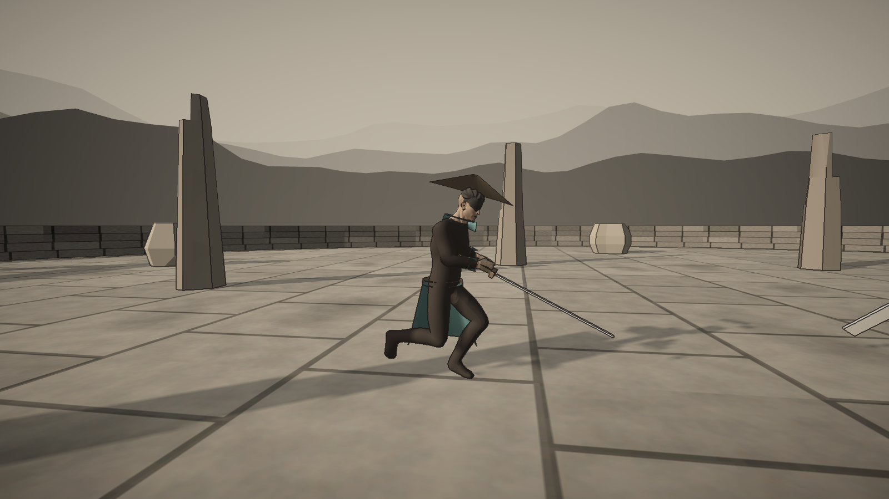
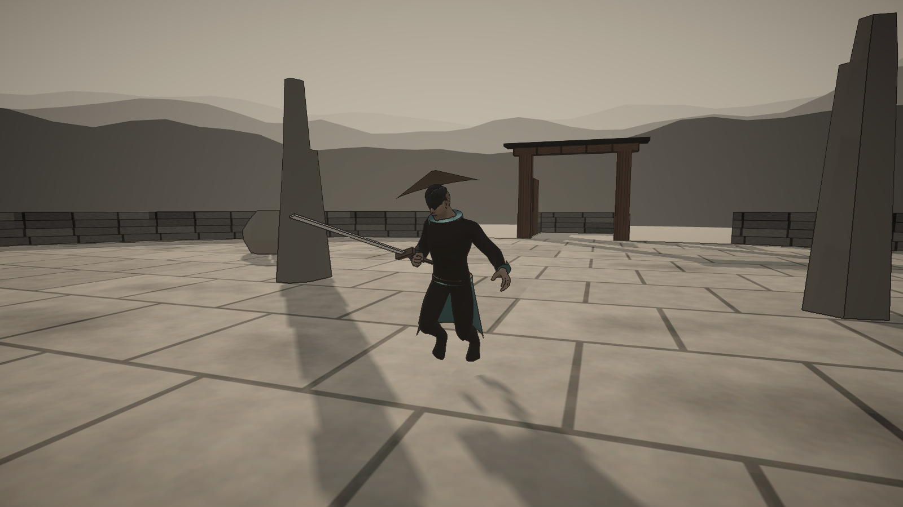
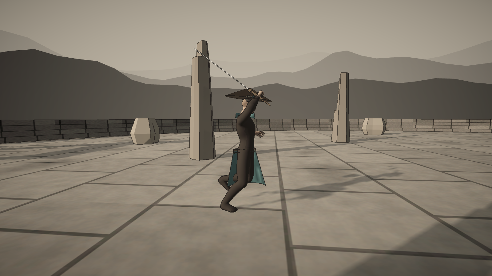
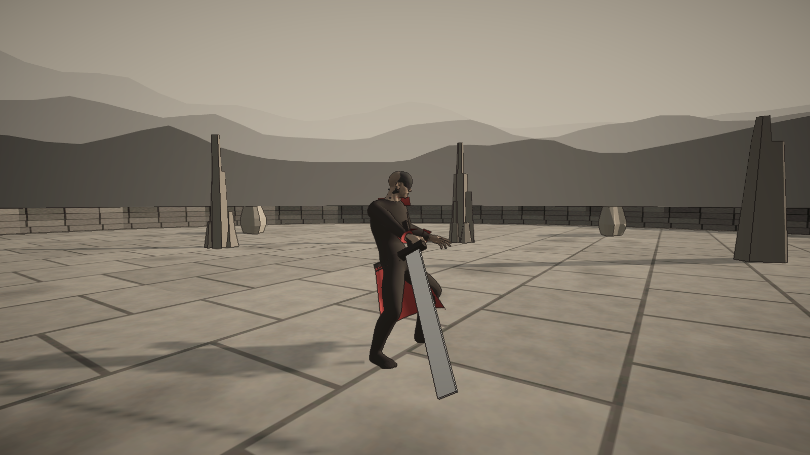
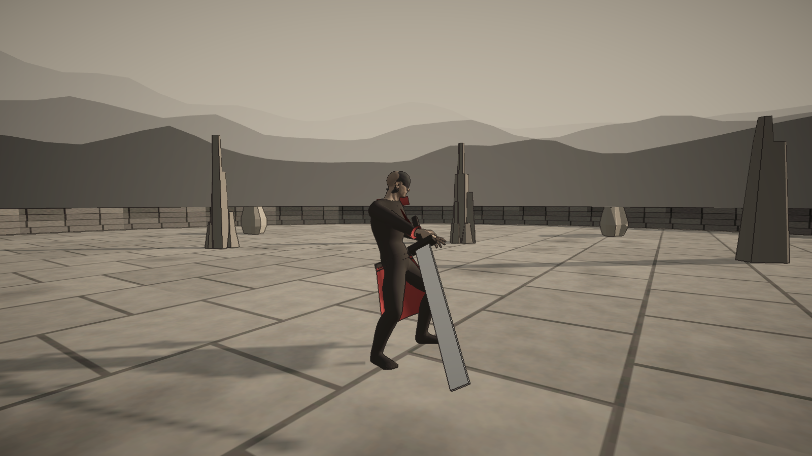
Play 의견: 이동 중 검이 부자연스럽고, 적이 "살짝 베이는" 느낌이 부족. 무료(CC0) 에셋만 Claude가 받아서 진행: Quaternius Universal Animation Library 2 [Standard] 17MB.
A. 보이는 검 자세 3종 (판정 8방향은 그대로)
| 판정 | 보이는 자세 | 언제 |
|---|---|---|
| ↓ ↙ ↘ | 하단·와키가마에 — 칼을 낮게 옆·뒤로 | 달릴 때 |
| ↑ ↖ ↗ | 상단·팔상 — 칼을 세워 어깨 위로 | 물러날 때·점프 |
| ← → | 중단 — 칼끝은 적에게 | 옆걸음 |
상체만 검 겨눔 동작으로 덮어 팔 흔들기 제거, 오른손은 자세별 데이터 위치로. 옆·뒤 이동은 스텝 동작(있으면) 또는 걷기 거꾸로 재생 + 상하체 비틀기.
B. 적 피격 3단계 (동작 위에 덧입히기)
| 단계 | 언제 | 몸 | 흔적 |
|---|---|---|---|
| 스침 | 일반 성공 | 몸을 빼며 반 발 물러남 · 상체 15° 젖힘 | 얇은 먹 선 1.5초 |
| 베임 | 같은 방향 둘째 타 · 큰 피해 | 어깨·허리 30° 꺾임 · 한 발 밀림 | 굵은 붓 자국 · 먹 튀김 |
| 깊게 | 치명타·마무리·반격 | 기존 크게 튕김 | 굵은 자국 |
일정
- R6-1 UAL2 받기 · 라이선스 확인
- R6-2 검 자세 3종
- R6-3 옆·뒤 이동
- R6-4 적 피격 3단계
- R6-5 검사 · 미리보기 · 문서 → Play 확인
R7 캐릭터 모델 교체 구현 · Play 확인 대기
후보 비교는 model-preview.html. 선택: Quaternius Universal Base Characters 무료판(CC0, 라이선스 확인). 마네킹 대신 얼굴·손가락이 있는 사람 모델에 먹빛 무복·도포·깃·끝동, 피부·머리는 수묵 톤. 예전 마네킹은 남겨 둠(되돌리기 가능).
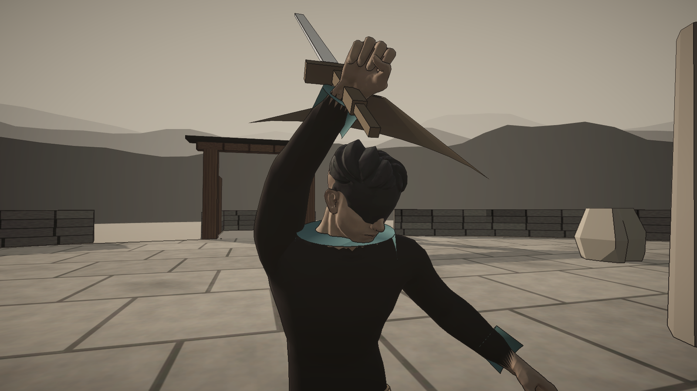
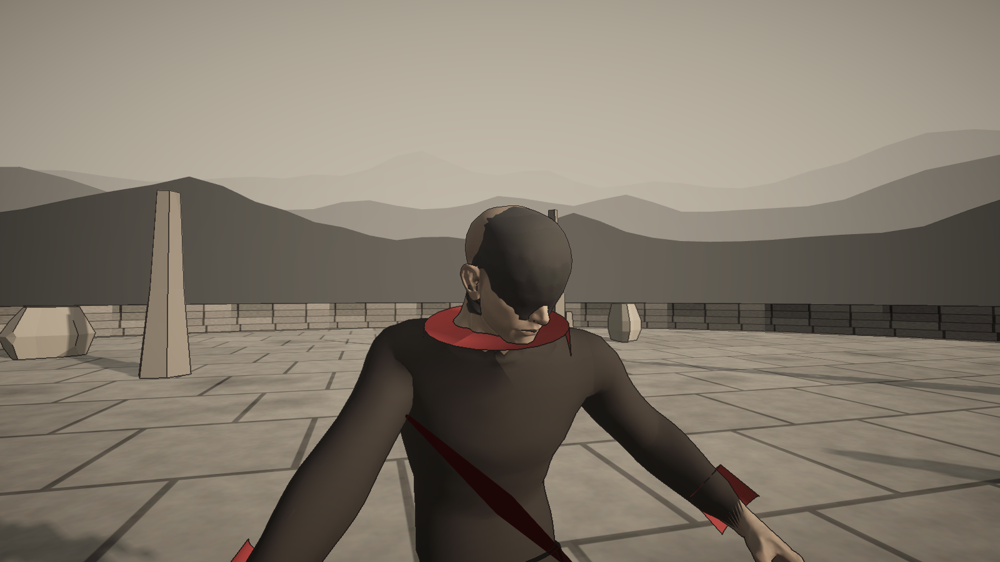
R8 Play 의견 2차 구현 · Play 확인 대기
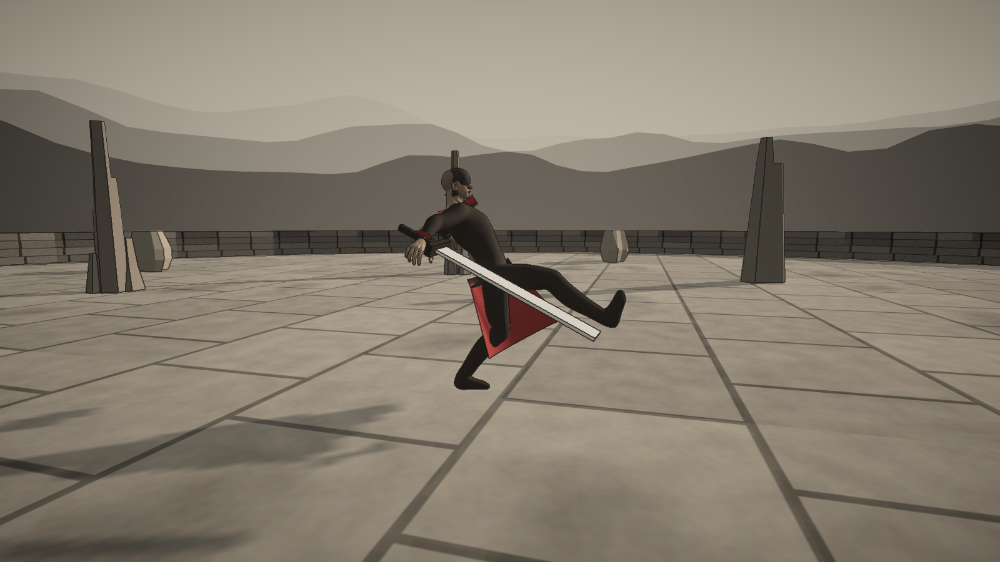
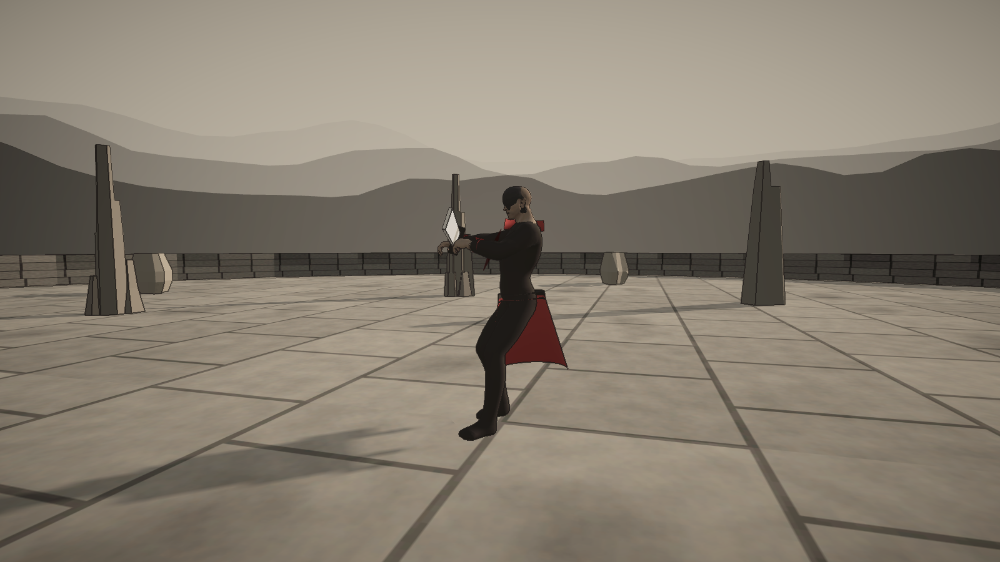
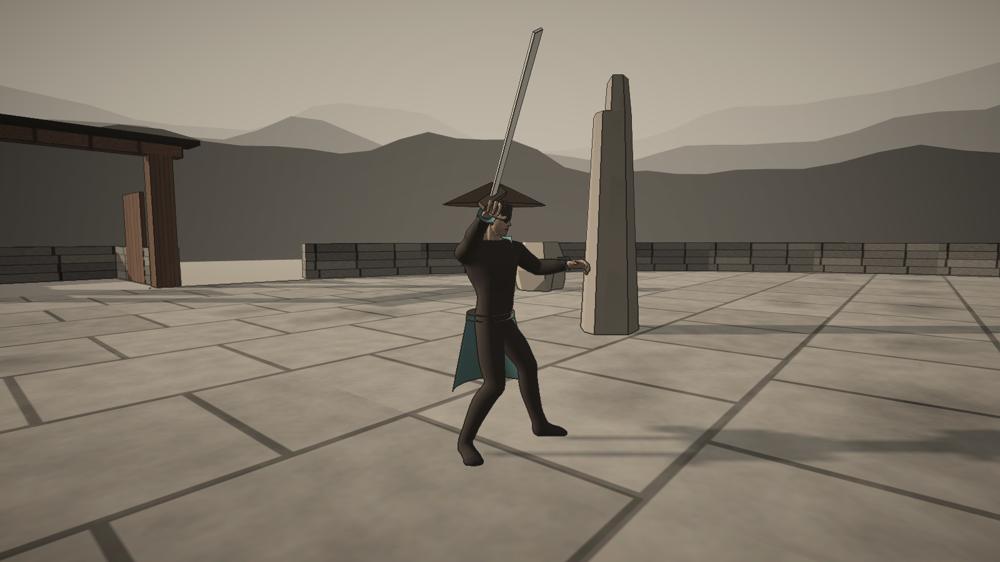
확정: 같은 쪽 이어 베기 = 회전(보정 유지), ↑↑·↓↓ 불가 · 적 예고·후딜 ×0.7 · 턴 교대 + 재진입 1.2초 + 적 적응(+5%/타, 최대 25%, 회복) · 합 공격 3칸 기억 입력(속도 스탯으로 시간 약간↑, 모두 막으면 반격 1회) · 새 기술 5종 + 거리별 확률표.
옷 보강 완료(근육 굴곡을 다듬어 천처럼, 발은 천 신발 모양) — 달리기 미리보기. git 보류 · 삿갓 그림자 유지.

| # | 의견 | 제안 |
|---|---|---|
| 1 | ↗→↘ 이어 베기 부자연 | 같은 쪽 연속(↖←↙끼리 / ↗→↘끼리)이면 회전 베기 |
| 2·7 | 애니메이션 부족 | KayKit 무료(CC0, 150+) 시험 → 부족하면 Quaternius 유료판(사용자 구매) → 코드 보강 |
| 3 | 적 공격 더 짧게 | 예고·후딜 ×0.7 |
| 4 | 연속 공격으로 너무 쉬움 | 턴 교대(교환 뒤 적 반격) / 재진입 대기 1.2초 / 적 방어율 상승 |
| 5 | 3~6m 적 공격 막기 | 합 공격: 3칸이 순서대로 붉게 → 같은 순서로 입력, 칸마다 검 튕김/피해, 3개 성공 시 적 경직 |
| 6 | 적 기술 단조로움 | 새 기술 5개(회전 베기·밀쳐 차기·합 공격·찌르기 돌진·부채 투척) + 거리별 확률표, 도약은 모든 거리 확률 |
세부 확률표와 확인할 질문은 roadmap.md R8.
다음 진행 순서
- S0~S8-4 Play 확인 (사용자) — Title 장면에서 시작
2026-10-08 발견·수정: 캐릭터가 진행 방향 반대를 보고 달림(동작 가져오기 회전 기준) → 수정 · 검사 추가
2026-10-08 의견 반영: 회전 베기 때 카메라 고정, 캐릭터와 검만 회전 → Play 확인
2026-10-08 review R1·R2·R3·R4 적용, 규칙 검사 통과 → Play 확인 · R5는 규칙 결정 필요 (review-fix-plan) - Play 확인 → S8-5 템포 조정